Based on the paper by Marc Finzi, Shikai Qiu, Yiding Jiang, Pavel Izmailov, J. Zico Kolter and Andrew Gordon Wilson (Carnegie Mellon University, New York University), arXiv:2601.03220, version 2, March 2026
The paper and the code are public.
Motivation
Start with a practical question: why can two datasets of the same size teach a model very different things? Text pretraining transfers to robotics control, theorem proving and forecasting; the same number of image bytes transfers much less. A useful measure should distinguish information that is merely unpredictable from information that a learner can turn into a reusable pattern.
AlphaZero makes the question vivid. It never saw a human game of chess: it received the rules and a reinforcement-learning algorithm, then trained by self-play. The rules, algorithm and random seed are a short description of the run, yet the trained network contains useful chess strategies. What did the computation make accessible to the learner?
The same gap appears in practical questions of machine learning:
- Pretraining on text improves robotics control, theorem proving and time-series forecasting. Pretraining on as many bytes of images gives a much narrower gain. Which property of text is responsible?
- Synthetic data improves language models, although the data processing inequality states that a deterministic transformation cannot add information.
- Once high-quality text is exhausted, by which measure should we choose or generate new pretraining data?
Finzi et al. (2026) argue that these questions need a measure of information relative to an observer with bounded computation. We first make the classical notions explicit, then add the computational restriction, define the new quantity, and finally discuss estimators and experiments.
Two classical notions of information
Two classical measures answer different questions. For a random variable \(X\) with probability mass function \(p\), the Shannon entropy is the expected number of bits needed to encode a draw from the distribution:
\[H(X)=\mathbb{E}\bigl[-\log p(X)\bigr].\]Logarithms in this post are base 2. The Kolmogorov complexity \(K(x)\) of one realised string \(x\) is the length of the shortest program that prints \(x\) on a fixed universal Turing machine \(\mathcal{U}\) (Li and Vitányi, 2008).
The distinction is easiest with two examples:
- Random bits: high Shannon entropy and, for a typical realised string, high Kolmogorov complexity. There is little to predict and no short recipe to discover.
- A repeated pattern: low entropy and low complexity. A short program can generate the whole string.
These measures describe uncertainty or compressibility. They do not say whether a particular learner can discover a pattern within a finite compute budget. A model trained on random API keys learns little beyond their frequencies; a model trained on a compact algorithm can learn reusable circuits even when the algorithm itself is short. Figure 1 illustrates the distinction.
Keep this distinction in mind: Shannon entropy asks how surprising a sample is on average; Kolmogorov complexity asks how short a recipe can describe one sample. Epiplexity will ask how much of that recipe a specified learner can actually find.
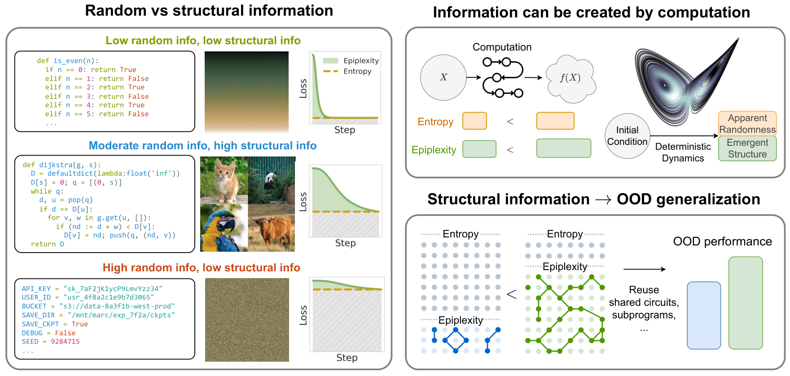
Figure 1. Left: three kinds of data and the training loss of a model on each. The dashed line is the final loss, the random part; the green area above it is the structural part. Right: computation can create both kinds of information; learned structure can transfer to out-of-distribution (OOD) tasks. Source: Fig. 1 of the paper.
The paper turns this missing resource into three paradoxes: statements that hold for an unlimited observer but can fail for a computationally bounded learner.
| Classical statement | Observation in practice |
|---|---|
| A deterministic map \(f\) adds no information: \(H(f(X))\le H(X)\) and \(K(f(x))\le K(x)+K(f)+c\) | Pseudorandom generators create randomness; self-play and synthetic data improve models |
| Information does not depend on the order of prediction: \(H(X)+H(Y\mid X)=H(Y)+H(X\mid Y)\) | Language models compress English text better left to right than in reverse (Papadopoulos et al., 2024) |
| Likelihood training reproduces the generator: \(\arg\min_P\mathbb{E}_{X\sim Q}[-\log P(X)]=Q\) | In the Game of Life a local rule generates gliders; a predictor with bounded time learns gliders as objects |
Here \(c\) is a constant independent of \(x\); \(Q\) is the distribution of the data. The classical statements are mathematically correct in their usual settings. The apparent conflict comes from asking a finite learner to find or use a description that exists in principle. Epiplexity resolves that mismatch by bounding the observer’s running time.
Information for an observer with bounded time
A model that runs in bounded time
Definition 1 fixes the models available to the observer: probability models that can score an observation and generate a new one within a time bound. The observer is not allowed to hide an unlimited computation inside its model.
The quantity built from this restriction is epiplexity (from epistemic complexity): the amount of structure that the bounded observer can extract and use.
Definition 1 (time-bounded probabilistic model; Def. 7 of the paper). Let \(\mathcal{U}\) be a fixed universal Turing machine with self-delimiting programs: no program is a proper prefix of another. Let \(T:\mathbb{N}\to\mathbb{N}\) be a non-decreasing time-constructible function. A program \(\mathrm{P}\) is a \(T\)-time probabilistic model over \(\{0,1\}^n\) if \(\mathcal{U}\) runs it in two modes, each halting within \(T(n)\) steps:
- evaluation: on input \((0,x)\) with \(x\in\{0,1\}^n\) it outputs a probability \(P(x)\in[0,1]\) with a finite binary expansion;
- sampling: on input \((1,u)\), for an infinite string \(u\) of random bits, it outputs \(x\in\{0,1\}^n\) with probability \(P(x)\).
The probabilities sum to one. \(\mathcal{P}_T\) is the set of all such programs; \(\lvert\mathrm{P}\rvert\) is the length of \(\mathrm{P}\) in bits.
Roman \(\mathrm{P}\) denotes the program and italic \(P\) the distribution it computes. A function \(T\) is time-constructible if \(\mathcal{U}\) can compute \(T(n)\) from \(n\) within \(O(T(n))\) steps. The definition requires both modes because a useful model of data does both: it scores an observation and generates new ones. A transformer with a softmax output does both within a fixed number of forward passes, as do most sequence models.
Epiplexity and time-bounded entropy
A program in \(\mathcal{P}_T\) gives a two-part code for data. First transmit the program describing a useful model; then transmit the residual data using that model. Arithmetic coding of \(x\) with a model \(P\) takes about \(-\log P(x)\) bits. The best program under the time bound splits the information in \(X\) into a model part and a residual part.
Definition 2 (epiplexity and time-bounded entropy; Def. 8 of the paper). For a random variable \(X\) on \(\{0,1\}^n\), let
\[\mathrm{P}^\star=\arg\min_{\mathrm{P}\in\mathcal{P}_T}\Bigl\{\lvert\mathrm{P}\rvert+\mathbb{E}\bigl[-\log P(X)\bigr]\Bigr\},\]with ties broken by the shortest program. The epiplexity of \(X\) is \(S_T(X):=\lvert\mathrm{P}^\star\rvert\). The time-bounded entropy of \(X\) is \(H_T(X):=\mathbb{E}\bigl[-\log P^\star(X)\bigr]\).
The sum \(\mathrm{MDL}_T(X):=S_T(X)+H_T(X)\) is the minimum description length (MDL) of \(X\) under the bound. Epiplexity is the model part of this code: the bits of structure the observer has to keep in order to predict well. Time-bounded entropy is the data part: the bits that remain unpredictable even for the best model the observer can run.
In plain language: how much of the data can this learner explain with a reusable model, and how much still looks random to it? The answer changes when the allowed compute or the model family changes.
- Uniform random bits. Let \(U_n\) be uniform on \(\{0,1\}^n\) and \(T(n)\ge c_1\). A program of constant length \(c_2\) assigns \(P(x)=2^{-n}\) to every string; the two-part code with this program has length \(n+c_2\). Hence \(\mathrm{MDL}_T(U_n)\le n+c_2\). By the Gibbs inequality, no model codes \(U_n\) in fewer than \(n\) bits on average: \(H_T(U_n)\ge H(U_n)=n\). Therefore \(S_T(U_n)\le c_2\): random bits contain maximal random information and no structure.
- Two alternating strings. Let \(X\) be \(0101\ldots\) or \(1010\ldots\), each with probability \(\tfrac12\). Take \(T(n)=\Theta(n)\). A program of constant size assigns probability \(\tfrac12\) to \(0101\ldots\) and to \(1010\ldots\) within linear time. Both \(S_T(X)\) and \(H_T(X)\) are \(O(1)\).
Only the total is monotone in the bound: \(\mathrm{MDL}_{T'}(X)\le\mathrm{MDL}_T(X)\) whenever \(T'\ge T\). Epiplexity itself can rise or fall with \(T\); an experiment below shows it falling.
For pairs of random variables the authors define conditional versions.
Definition 3 (conditional quantities; Def. 11 of the paper). For random variables \(X\) and \(Y\), the conditional epiplexity \(S_T(Y\mid X)\) and time-bounded entropy \(H_T(Y\mid X)\) follow from Definition 2 with \(-\log P(Y\mid X)\) in place of \(-\log P(X)\) and the expectation over \((X,Y)\). The program receives \(x\) as input and must be a \(T\)-time model of \(Y\) for every fixed \(x\).
Unlike Shannon entropy, these quantities obey no chain rule: in general \(H_T(Y,X)-H_T(X)\ne H_T(Y\mid X)\). Paradox 2 rests on this asymmetry.
The theory
The theorems use a polynomial time bound. We write \(S_{\mathrm{Poly}}\) and \(H_{\mathrm{Poly}}\) for \(S_T\) and \(H_T\) with \(T\) a polynomial in \(n\). Below, \(c\) is a fixed constant.
Pseudorandom numbers are random to a bounded observer
A pseudorandom generator (PRG; Blum and Micali, 1982) stretches a short random seed into a long string that looks random to every efficient test.
Definition 4 (non-uniform PRG; Def. 3 of the paper). A function \(G:\{0,1\}^k\to\{0,1\}^n\) with \(n=\mathrm{poly}(k)\) is a PRG if every probabilistic polynomial-time test \(D\), given an advice string of length \(\mathrm{poly}(k)\), has a negligible advantage in telling \(G(U_k)\) from \(U_n\):
\[\varepsilon(k)=\Bigl\lvert\Pr_{s\sim U_k}\bigl[D(G(s))=1\bigr]-\Pr_{u\sim U_n}\bigl[D(u)=1\bigr]\Bigr\rvert<k^{-m}\quad\text{for every }m>0\text{ and all large }k.\]
Theorem 1 (Thm. 9 of the paper). For every PRG \(G\) with advantage \(\varepsilon(k)\),
\[n-2-n\varepsilon(k)<H_{\mathrm{Poly}}\bigl(G(U_k)\bigr)\le n+c,\qquad S_{\mathrm{Poly}}\bigl(G(U_k)\bigr)\le c+n\varepsilon(k).\]
The Shannon entropy of \(G(U_k)\) is only \(k\): there are \(2^k\) seeds. The polynomial-time Kolmogorov complexity of \(G(U_k)\) is at most \(k+c\), because \(G\) together with the seed is a short program. To a polynomial-time observer, however, the output is as unpredictable as \(n\) truly random bits and contains no structure. Epiplexity and time-bounded entropy agree with the intuition that pseudorandom numbers are random and nothing more.
Paradox 1: deterministic computation creates information
Theorem 2 (Thm. 12 of the paper). For every PRG \(G\) with advantage \(\varepsilon(k)\),
\[H_{\mathrm{Poly}}\bigl(G(U_k)\bigr)-H_{\mathrm{Poly}}(U_k)>n-k-n\varepsilon(k)-c.\]
The output of the deterministic map \(G\) has about \(n-k\) bits more time-bounded entropy than the input. The time-bounded analogue of the classical bound \(H(f(X))\le H(X)\) therefore fails. The reason is an asymmetry between \(G\) and \(G^{-1}\) that appears only under a time bound: \(K(G^{-1})=K(G)+O(1)\), while a short program for \(G\) gives no fast program for \(G^{-1}\). The authors derive a practical rule for synthetic data: to create new information, use transformations without a simple and efficiently computable inverse.
Theorem 2 concerns random information only. Evidence that computation also creates structure is empirical: the cellular-automaton experiment below.
Paradox 2: the order of prediction matters
A one-way permutation is a bijection \(f\) of \(\{0,1\}^n\), computable in polynomial time, that efficient algorithms cannot invert. Formally, every probabilistic polynomial-time algorithm \(A\) with polynomial advice has \(\Pr_{x\sim U_n}[A(f(x))=x]<n^{-m}\) for every \(m>0\) and all large \(n\).
Theorem 3 (Thm. 13 of the paper). Let \(f\) be a one-way permutation, \(X=U_n\) and \(Y=f(X)\). Then
\[H_{\mathrm{Poly}}(X\mid Y)+H_{\mathrm{Poly}}(Y)>H_{\mathrm{Poly}}(Y\mid X)+H_{\mathrm{Poly}}(X)+\omega(\log n).\]Here \(\omega(\log n)\) is a term \(g(n)\) with \(g(n)/\log n\to\infty\).
For Shannon entropy both sides equal \(H(X,Y)\). Under a time bound, predicting \(X\) first and then \(Y=f(X)\) is easy: the observer computes \(f\). Predicting \(Y\) first and then \(X\) requires inverting \(f\), which no polynomial-time observer can do. The same data leave more random information in one order than in the other.
The authors check this with an elementary cellular automaton (ECA): a row of binary cells updated in parallel by a rule \(r\in\{0,\dots,255\}\) that sets each cell from the three cells centred on it. Rule 30 is believed to be one-way (Wolfram, 2002). The map \(f\) is 8 updates of rule 30 on \(n\) cells with periodic boundary. In Figure 2, a transformer trained in the forward order reaches the Shannon entropy of the data; in the reverse order a gap to the Shannon entropy persists.
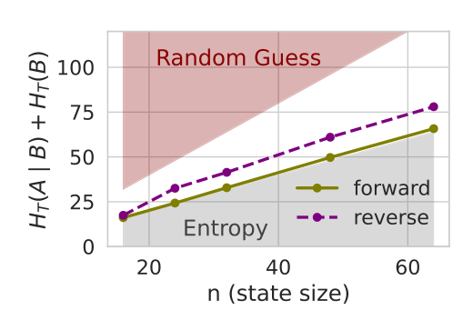
Figure 2. Total time-bounded entropy of an input–output pair of rule 30 against the number of cells \(n\), predicted in the forward order (input first) and in the reverse order (output first). Grey region: the Shannon entropy. Source: Fig. 4a of the paper.
How much structure can exist?
Theorem 4 (Thm. 10 of the paper). If one-way functions secure against probabilistic polynomial-time algorithms with polynomial advice exist, then some random variables \(X_n\) on \(\{0,1\}^n\) have \(S_{\mathrm{Poly}}(X_n)=\Omega(\log n)\).
Epiplexity can therefore grow without bound. The authors acknowledge the limits of this result. Logarithmic growth is far below the power laws suggested by natural data; the proof is non-constructive. No theorem gives an explicit distribution with large epiplexity.
Measuring epiplexity with neural networks
From programs to training runs
A search over all programs is intractable. The authors restrict \(\mathcal{P}_T\) to neural networks of one architecture trained by one optimiser. They measure time in floating-point operations (FLOPs). A network with \(N\) parameters trained on \(D\) tokens needs about \(6ND\) FLOPs; evaluating it on the \(\mathcal{D}\) tokens of the dataset \(X\) needs \(2N\mathcal{D}\). A training run is admissible under the bound \(T\) when
\[6ND+2N\mathcal{D}\le T.\]The authors call \(X\) the test dataset: we choose the training data freely, while \(X\) is the data whose information we measure.
Writing out the weights of a trained network overestimates the information in them, particularly for large networks trained on little data. The authors encode the training process instead, with the prequential or the requential code.
Prequential coding: the area under the loss curve
Let \(Z_0,\dots,Z_{M-1}\) be training examples, i.i.d. with the distribution of \(X\). Let \(P_i\) be the network after training on \(Z_0,\dots,Z_{i-1}\). The prequential code (Dawid, 1984) transmits the data one example at a time. The sender encodes \(Z_i\) with \(\log 1/P_i(Z_i)\) bits and then trains on it. The receiver decodes \(Z_i\) with an identical copy of \(P_i\) and repeats the same training step. The total length \(\sum_i\log 1/P_i(Z_i)\) encodes the data together with the final network \(P_M\).
To isolate the network, the authors subtract the code length of the data given the final network, \(\sum_i\log 1/P_M(Z_i)\), following a heuristic based on symmetry of information (Zhang et al., 2020). The remainder is the area under the loss curve above the final loss:
\[\lvert\mathrm{P}_{\mathrm{preq}}\rvert\approx\sum_{i=0}^{M-1}\Bigl[\log\frac{1}{P_i(Z_i)}-\log\frac{1}{P_M(Z_i)}\Bigr].\]Figure 3 shows why this area measures structure. On random data the loss never decreases: the area is zero. On simple data the loss drops at once and the area is small. Only data whose structure the network absorbs step by step produce a large area.
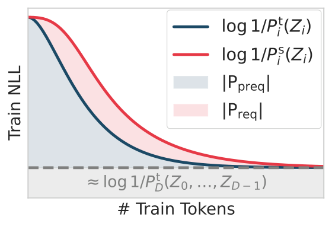
Figure 3. Training loss against the number of training tokens. The blue area is the prequential estimate \(\lvert\mathrm{P}_{\mathrm{preq}}\rvert\). The red area between the student and teacher curves is the requential estimate \(\lvert\mathrm{P}_{\mathrm{req}}\rvert\) of the next section. Source: Fig. 2a of the paper.
Each loss \(\log 1/P_i(Z_i)\) is computed before the network trains on \(Z_i\), which makes it an estimate of the test loss. When the network overfits, this estimate departs from the training loss. The estimate is also a heuristic. Both code lengths are only upper bounds on Kolmogorov complexities; the difference between them is not an upper bound on the complexity of the network. Symmetry of information fails under a time bound; the decoding time need not be \(6ND\).
Requential coding: transmitting only the disagreement
The requential code (Qiu et al., 2026) is an explicit code with a known decoding time. A teacher network \(P^{\mathrm{t}}_i\) trains on the real data. A student network \(P^{\mathrm{s}}_i\) trains only on samples \(\widetilde{Z}_i\sim P^{\mathrm{t}}_i\) generated by the teacher. Sender and receiver hold identical copies of the student. Relative entropy coding (Theis and Ahmed, 2022) transmits one sample of \(P^{\mathrm{t}}_i\) to a receiver that holds only \(P^{\mathrm{s}}_i\) in about \(\mathrm{KL}_i+\log(1+\mathrm{KL}_i)+4\) bits on average. Here \(\mathrm{KL}_i:=\mathrm{KL}\bigl(P^{\mathrm{t}}_i\,\Vert\,P^{\mathrm{s}}_i\bigr)\) is the Kullback–Leibler divergence \(\mathrm{KL}(p\,\Vert\,q)=\mathbb{E}_p[\log p/q]\). The code length of the final student is the sum over training steps:
\[\lvert\mathrm{P}_{\mathrm{req}}\rvert=\sum_{i=0}^{M-1}\bigl[\mathrm{KL}_i+\log(1+\mathrm{KL}_i)+4\bigr]+O(1)\approx\sum_{i=0}^{M-1}\mathrm{KL}_i .\]The code transmits only the disagreement between teacher and student; the entropy of the real data does not enter. The receiver replays the student training in \(6ND\) FLOPs. In Figure 3 the requential estimate is roughly the area between the student and teacher loss curves.
| Prequential | Requential | |
|---|---|---|
| Code | heuristic, decoding time not guaranteed | explicit, decoded in \(6ND\) FLOPs |
| Training | one network | teacher and student, 2 to 10 times slower |
| Estimate | several times larger | smaller |
Across the datasets of the paper the prequential and requential estimates correlate, most closely among datasets of the same kind. The authors recommend the prequential estimate for ranking datasets, especially when the loss curve of an expensive training run already exists. For accurate values they recommend the requential estimate.
The compute-optimal two-part code
Either code gives the model part \(\lvert\mathrm{P}\rvert\) of a trained network. The authors estimate the data part \(\mathbb{E}[\log 1/P(X)]\) as the validation loss times \(\mathcal{D}\). They sweep the model size \(N\) (width and depth) and the training length \(D\). Training uses a constant learning rate with an exponential moving average of the weights: each run then gives a whole curve of code length against compute. The lower envelope over all runs estimates \(\mathrm{MDL}_T\) at every bound \(T\). Figure 4 shows the construction. At a given \(T\) the model part of the envelope estimates \(S_T(X)\); the data part estimates \(H_T(X)\). The empirical envelope is jagged; the authors smooth it with a lower convex hull.
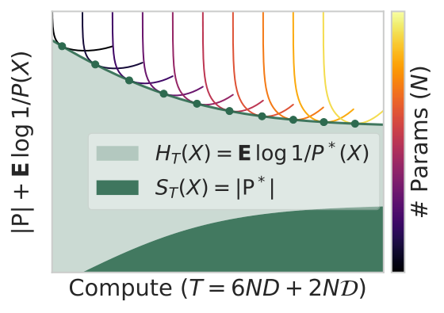
Figure 4. Schematic of the estimation. Each thin curve is a training run, coloured by the number of parameters \(N\); the dots form the lower envelope. At each compute bound, dark green is \(S_T\) and light green is \(H_T\). Source: Fig. 2b of the paper.
Under standard scaling assumptions the authors derive typical trends. Epiplexity grows with the compute bound \(T\) while time-bounded entropy falls. With unlimited compute, epiplexity grows with the size \(\mathcal{D}\) of the dataset while time-bounded entropy per token falls. These trends are typical only; the emergence experiment below is a counterexample.
Experiments
Cellular automata: equal programs, different information
Setting. The ECA has 64 cells with periodic boundary. The input \(X\) is the state after 1000 updates of a uniform random row; the output is \(Y=F_r^{48}(X)\). Here \(F_r\) is one update under rule \(r\). The authors train transformers of width 16 to 512 and depth 1 to 9 with the requential code. They measure \(S_T(Y\mid X)\) and \(H_T(Y\mid X)\) on a test set of \(\mathcal{D}=10^8\) tokens of \(Y\).
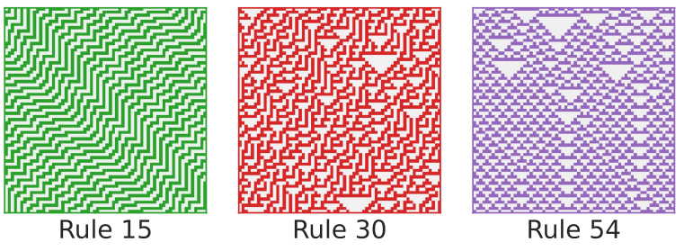
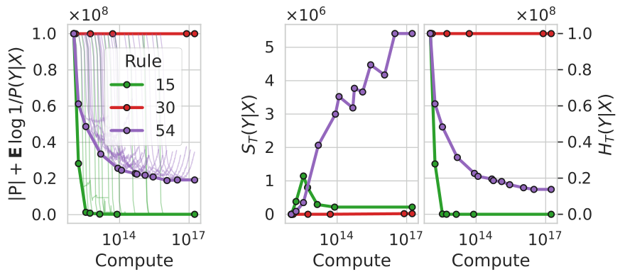
Figure 5. Top: rollouts of rules 15, 30 and 54 from random rows, time downward. Bottom: two-part code, \(S_T(Y\mid X)\) and \(H_T(Y\mid X)\) against compute in FLOPs. Source: Fig. 3 of the paper.
| Rule | Wolfram class | \(S_T(Y\mid X)\), bits | \(H_T(Y\mid X)\), bits |
|---|---|---|---|
| 15 | II, periodic | \(\approx 2\times10^5\) | \(\approx 0\) |
| 30 | III, chaotic | \(\approx 0\) | \(\approx 10^8\) |
| 54 | IV, complex | \(\approx 5.4\times10^6\) | \(\approx 1.5\times10^7\) |
Values at \(10^{17}\) FLOPs, our estimates from Figure 5.
Rules 15, 30 and 54 define programs of equal length and equal running time. Rule 15 is periodic with a simple inverse. The loss saturates quickly; the data contain little information of either kind. Rule 30 is chaotic. The loss makes no progress; the information is maximal and entirely random. Rule 54 is complex but partly predictable. The loss decreases steadily as compute grows; the model extracts millions of bits of structure. Zhang et al. (2024) found that models trained on class IV rules transfer best to downstream tasks, in line with the high epiplexity of rule 54.
Induction: a model learns more than the generator contains
Paradox 3 states that likelihood training only reproduces the generating process. The authors construct data whose best predictor must contain more than the generator.
Setting. \(Z\) is uniform on \(\{0,1\}^{32}\). The map \(f\) is 4 updates of rule 30; the mask \(m\) deletes the first \(h\) bits of \(Z\). The model receives \(m(Z)\) and predicts \(f(Z)\). A transformer with 3 layers and width 256 trains for 20 000 steps with the requential code.
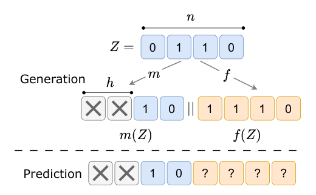
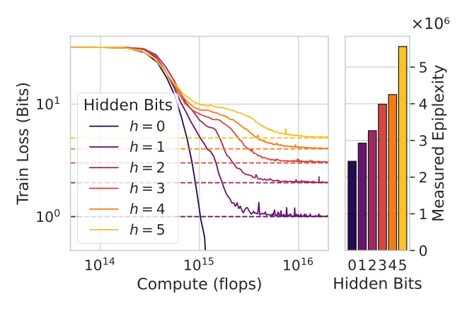
Figure 6. Top: the data. The generator computes \(m(Z)\) and \(f(Z)\) from \(Z\); the predictor receives only \(m(Z)\). Bottom: training loss against compute (dashed lines: \(h\) bits) and the measured epiplexity for each \(h\). Source: Fig. 5 of the paper.
The generator computes \(f\) forward and never inverts anything. A good predictor has to infer the \(h\) hidden bits of \(Z\): an inference step absent from the generator. In Figure 6 the loss converges to \(h\) bits, the entropy of the hidden bits, after compute that grows exponentially with \(h\). Epiplexity grows with \(h\). A second task, a Markov chain with part of the transition matrix hidden, shows the same effect: partly hidden matrices produce higher epiplexity than fully visible or fully hidden ones.
Emergence: when more compute means less structure
Setting. The data are 64 updates of rule 54. A non-looped transformer predicts the final state directly. A looped transformer generates the intermediate states one after another: the exact simulation.
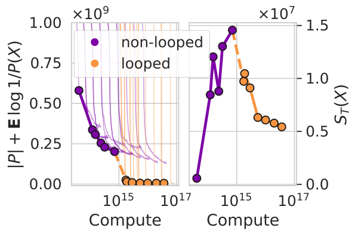
Figure 7. Two-part code and \(S_T\) against compute in FLOPs for the non-looped and looped models. Source: Fig. 6 of the paper.
In Figure 7, below about \(10^{15}\) FLOPs the non-looped model gives the shorter code. The epiplexity of this model rises with compute: it learns emergent patterns of rule 54, such as gliders and the rules of collisions between them. Above that bound the looped model gives the shorter code. The two-part code drops to almost zero and epiplexity falls. A model with less compute needs a longer program; epiplexity need not grow with \(T\). The authors call this case uncommon, because here brute-force simulation is feasible. For natural data at moderate compute they expect epiplexity to grow with compute.
Chess: the order of the data
Setting. Lichess games as characters. In the forward order each game is written as the moves followed by the final board in FEN, a one-line text encoding of a position. In the reverse order the board comes first. Transformers of 1 to 160 million parameters train on up to \(5\times10^9\) tokens with the requential code.
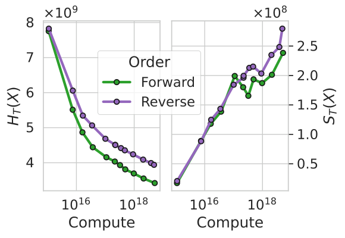
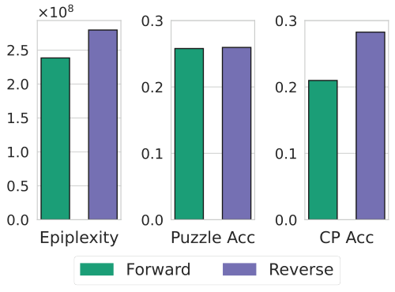
Figure 8. Top: \(H_T\) and \(S_T\) of the forward and reverse orders against compute in FLOPs. Bottom: \(S_T\), accuracy on chess puzzles and accuracy on the centipawn task after fine-tuning. Source: Figs. 4c and 7 of the paper.
In Figure 8, at large compute the reverse order gives both higher time-bounded entropy and higher epiplexity; at small compute the gap vanishes. The authors then fine-tune both models on two OOD tasks. On chess puzzles the forward and the reverse order reach the same accuracy. The centipawn task is to predict the advantage of a position, as evaluated by the Stockfish engine, in 9 classes. On this task the reverse order reaches an accuracy of 0.28 against 0.21. Predicting the moves from the final board forces the model to represent the board state. This structure transfers to a task on board states. The reverse order has the higher training loss, yet it gives the more useful model.
Natural data: text, chess and images
Setting. Three datasets of \(\mathcal{D}=5\times10^9\) tokens each. OpenWebText is English web text with one token per character; CIFAR-5M consists of \(32\times32\) greyscale images with one token per pixel. The authors train transformers of up to 160 million parameters with the requential code, under the bound \(T=6\times10^{18}\) FLOPs.
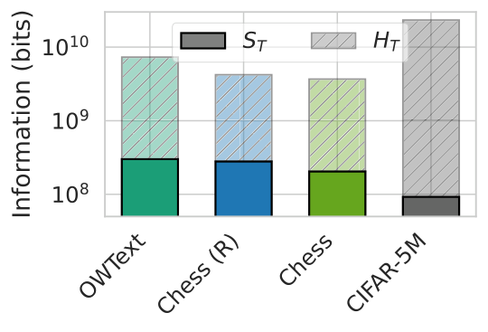
Figure 9. Epiplexity (solid) and time-bounded entropy (hatched) on a logarithmic axis; Chess (R) is the reverse order. Source: Fig. 8a of the paper.
| Dataset | \(S_T\), bits | \(\mathrm{MDL}_T\), bits | \(S_T/\mathrm{MDL}_T\) |
|---|---|---|---|
| OpenWebText | \(\approx 3\times10^8\) | \(\approx 7\times10^9\) | 4% |
| Chess, reverse | \(\approx 2.8\times10^8\) | \(\approx 4\times10^9\) | 7% |
| Chess, forward | \(\approx 2\times10^8\) | \(\approx 3.5\times10^9\) | 6% |
| CIFAR-5M | \(\approx 9\times10^7\) | \(\approx 2.3\times10^{10}\) | 0.4% |
Our estimates from Figure 9.
Epiplexity is a small fraction of the total information in every dataset. Text contains the most structure. CIFAR-5M contains the most information and the least structure. Over 99% of that information is random: it specifies the exact values of pixels. This ordering matches the observation from the motivation: text pretraining transfers broadly, image pretraining much less.
Published scaling laws give the same ordering: extrapolated to \(T=10^{25}\) FLOPs and \(10^{12}\) tokens, they place language first and pixel images last. Epiplexity also agrees with a result on data selection. Adaptive data optimisation (Jiang et al., 2025) reweights data domains during pretraining; the data it selects have higher prequential epiplexity than natural sampling, along with better downstream accuracy.
Limitations
The authors acknowledge these limits:
- Epiplexity measures the amount of structure, independent of the usefulness of that structure for a given task. The authors stress that it is no guarantee of OOD performance.
- The theorems are asymptotic and rest on cryptographic assumptions. The largest proved epiplexity grows as \(\Omega(\log n)\).
- The prequential estimate is a heuristic; the requential estimate is 2 to 10 times slower.
The released code and the experiments show further limits:
- Every estimate depends on the architecture, the optimiser, the bound \(T\) and the size \(\mathcal{D}\) of the test set. Comparisons are meaningful only with all four held fixed.
- Every sweep in the released code uses one random seed; no figure shows error bars.
- All experiments use transformers.
Conclusion
Epiplexity separates the information in data into the part a bounded observer can learn and the part that stays random. With a time bound, the paradoxes disappear. Deterministic computation creates information (Theorem 2 and the cellular automata). The order of prediction changes it (Theorem 3 and chess). A model can learn more than the generating program contains (the hidden bits). In practice the authors estimate it as the area under a loss curve above the final loss, or as the summed divergence between a teacher and a student, at the compute-optimal model. On natural data it ranks text above images; pretraining on text also transfers more broadly.
For machine learning the main message concerns data. Loss measures how random the data look to a model; epiplexity measures how much structure the model has to acquire to explain the rest. Two datasets with the same final loss can teach different amounts. When the aim is transfer to new tasks, epiplexity is a candidate criterion for selecting and generating data.
References
- M. Finzi, S. Qiu, Y. Jiang, P. Izmailov, J. Z. Kolter, A. G. Wilson. From Entropy to Epiplexity: Rethinking Information for Computationally Bounded Intelligence. arXiv:2601.03220v2, 2026. Code.
- S. Qiu, M. Finzi, Y. Zheng, K. Zhang, A. G. Wilson. Requential Coding: Pushing the Limits of Model Compression with Self-Generated Training Data. arXiv:2607.11883, 2026.
- A. P. Dawid. Present position and potential developments: some personal views. Statistical theory: the prequential approach. Journal of the Royal Statistical Society, Series A, 147(2):278–292, 1984.
- L. Theis, N. Y. Ahmed. Algorithms for the Communication of Samples. ICML, 2022.
- X. Zhang, X. Li, D. Dou, J. Wu. Measuring Information Transfer in Neural Networks. arXiv:2009.07624, 2020.
- M. Li, P. Vitányi. An Introduction to Kolmogorov Complexity and Its Applications. Springer, 2008.
- M. Blum, S. Micali. How to generate cryptographically strong sequences of pseudo random bits. FOCS, 1982.
- S. Wolfram. A New Kind of Science. Wolfram Media, 2002.
- S. Zhang, A. Patel, S. A. Rizvi, N. Liu, S. He, A. Karbasi, E. Zappala, D. van Dijk. Intelligence at the Edge of Chaos. arXiv:2410.02536, 2024.
- V. Papadopoulos, J. Wenger, C. Hongler. Arrows of Time for Large Language Models. ICML, 2024.
- D. Silver et al. A general reinforcement learning algorithm that masters chess, shogi, and Go through self-play. Science, 362(6419):1140–1144, 2018.
- Y. Jiang, A. Zhou, Z. Feng, S. Malladi, J. Z. Kolter. Adaptive Data Optimization: Dynamic Sample Selection with Scaling Laws. ICLR, 2025.